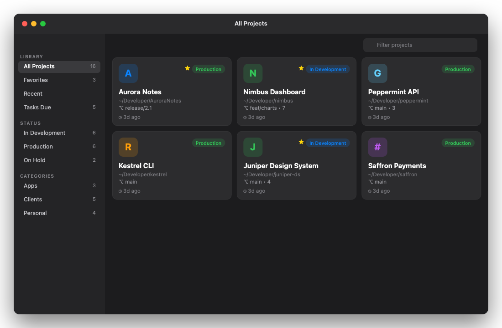
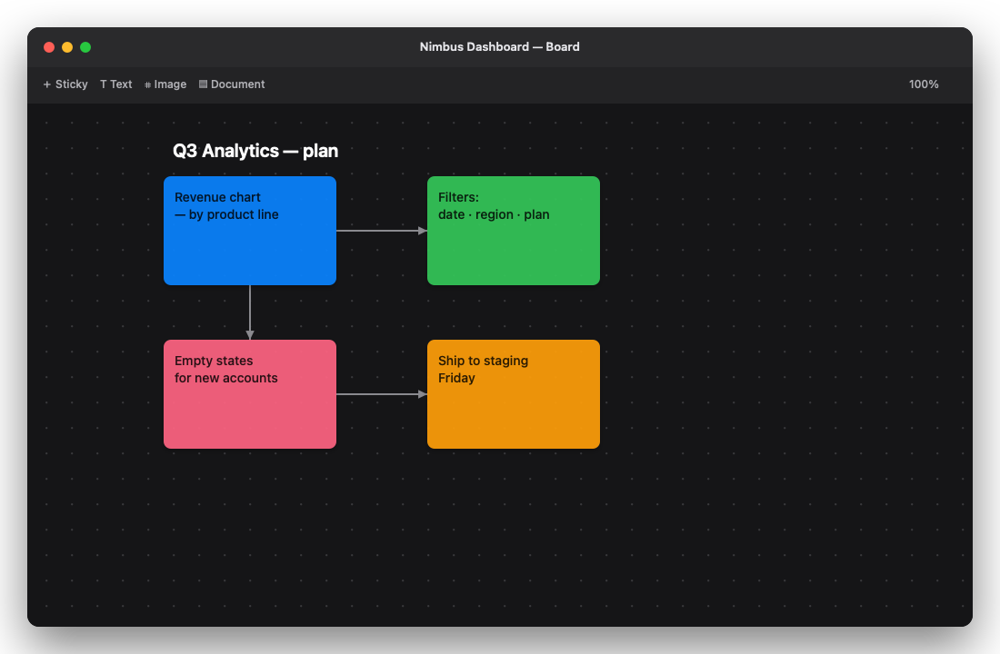
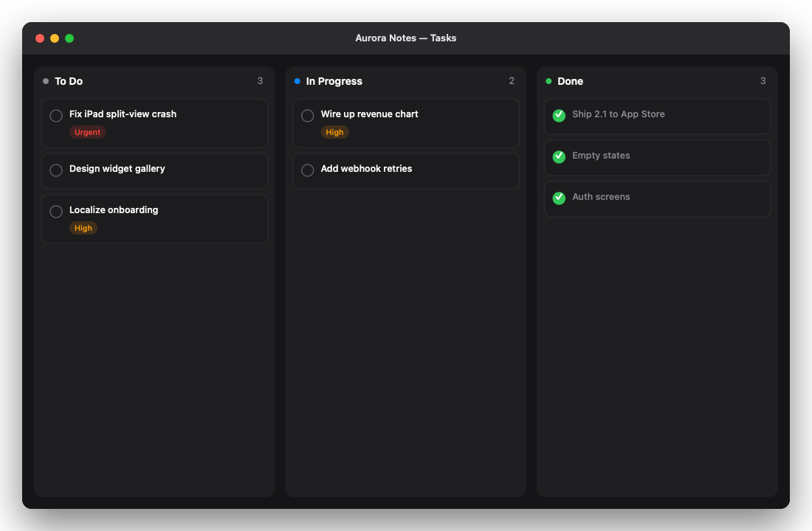

Every project.
One place.
Scan your computer for every project — git repos, Xcode/VS apps, Node services — see status at a glance, plan on a visual board, and open any project in your favorite editor.
macOS 14+ (Apple Silicon + Intel) · Windows 10/11 (x64 & ARM)

Built for people with too many projects
Scan & auto-detect
Finds every project by its markers — .git, .sln, .xcodeproj, package.json, Cargo.toml, go.mod and more. Skips node_modules and friends.
Git status at a glance
Branch, uncommitted files, last commit, ahead/behind, and a clickable remote link — per project, refreshed on demand.
Visual planning board
A Freeform-style canvas: sticky notes, text, images and documents with arrows, zoom, and drag-and-drop from your file manager.
Kanban tasks
To Do · In Progress · Done, drag cards between columns, with priority, due dates and a global "Tasks Due" view.
Open in your editor
One click into VS Code, Cursor, Xcode, Visual Studio, Rider — or launch Claude Code, Codex or a terminal at the folder.
Deadlines & reminders
Give a project a timeline and get a notification before it's due. Quick Open jumps you anywhere instantly.
See it


Get organized.
Free, native, and cross-platform. Your library stays on your computer.